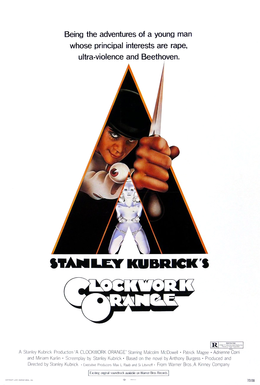
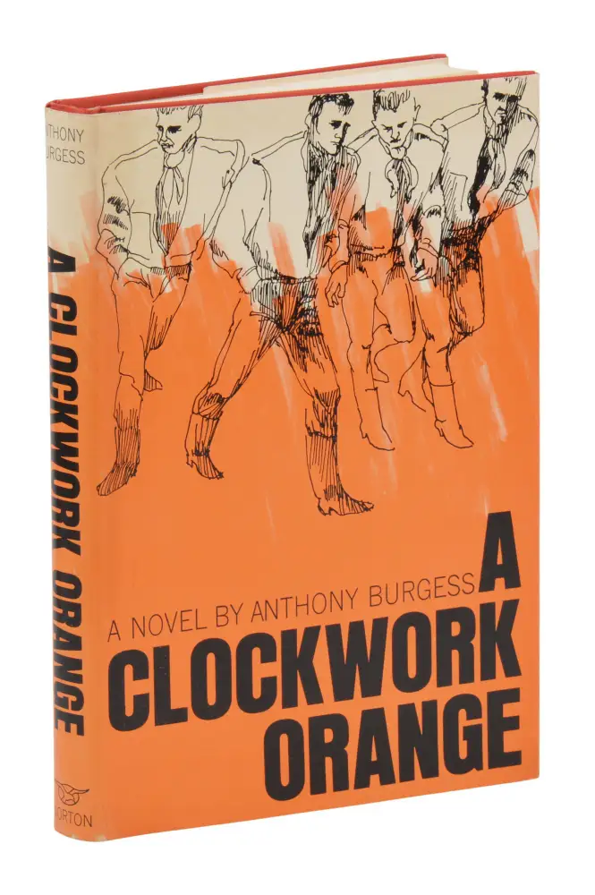

A Clockwork Orange
A Clockwork Orange (film)
A Clockwork Orange is a 1971 dystopian crime film adapted, produced, and directed by Stanley Kubrick, based on Anthony Burgess's 1962 novel. It employs disturbing and violent themes to comment on psychiatry, juvenile delinquency, youth gangs, and other social, political, and economic subjects in a dystopian near-future Britain. Dowell), the central character, is a charismatic,[5] anti-social delinquent whose interests include classical music (especially that of Beethoven), committing rape, theft, and "ultra-violence". He leads a small gang of thugs, Pete (Michael Tarn), Georgie (James Marcus), and Dim (Warren Clarke), whom he calls his droogs (from the Russian word друг, which is "friend", "buddy"). The film chronicles the horrific crime spree of his gang, his capture, and attempted rehabilitation via an experimental psychological conditioning technique (the "Ludovico Technique") promoted by the Minister of the Interior (Anthony Sharp). Alex narrates most of the film in Nadsat, a fractured adolescent slang composed of Slavic languages (especially Russian), English, and Cockney rhyming slang.
Plot
In a futuristic Britain, Alex DeLarge is leader of a gang of "droogs": Georgie, Dim, and Pete. They engage in an intoxicated evening of "ultra-violence", which includes beating a vagrant and fighting a rival gang. They beat writer Frank Alexander to the point of crippling him, and Alex rapes Frank's wife while singing "Singin' in the Rain". The next day Alex's probation officer, P. R. Deltoid, cautions him. Alex's droogs are not content with petty crime and want more equality and high-yield thefts, but Alex asserts his authority by attacking them. Alex invades the home of a wealthy "cat-lady" and bludgeons her with a phallic sculpture while his droogs remain outside. On hearing sirens, Alex tries to flee, but Dim smashes a bottle in his face and leaves him to be arrested. The woman dies of her injuries, and Alex is sentenced to 14 years prison for murder.
A Clockwork Orange (noval)
Kubrick's film is relatively faithful to the Burgess novel, omitting only the final, positive chapter, in which Alex matures and outgrows sociopathy. While the film ends with Alex being offered an open-ended government job, implying he remains a sociopath at heart, the novel ends with Alex's positive change in character. This plot discrepancy occurred because Kubrick based his screenplay on the novel's American edition, in which the final chapter had been deleted on the insistence of its American publisher.[16] He claimed not to have read the complete, original version of the novel until he had almost finished writing the screenplay, and that he never considered using it. [citation needed] The introduction to the 1996 edition of A Clockwork Orange says that Kubrick found the end of the original edition too blandly optimistic and unrealistic.
In the novel, F. Alexander recognises Alex through several careless references to the previous attack (such as his wife then claiming they did not have a telephone). In the film, Alex is recognised when singing the song 'Singing in the Rain' in the bath, which he had hauntingly done while attacking F. Alexander's wife. The song does not appear at all in the book, as it was an improvisation by actor Malcolm McDowell when Kubrick asked him if he could dance on the fifth day of filming the scene, after complaining that the rape scene was too "stiff". McDowell picked 'Singing in the Rain' because it was the only song he "sort of knew half the lyrics to" Alex's droogs are not content with petty crime and want more equality and high-yield thefts, but Alex asserts his authority by attacking them. Alex invades the home of a wealthy "cat-lady" and bludgeons her with a phallic sculpture while his droogs remain outside. On hearing sirens, Alex tries to flee, but Dim smashes a bottle in his face and leaves him to be arrested. The woman dies of her injuries, and Alex is sentenced to 14 years prison for murder.